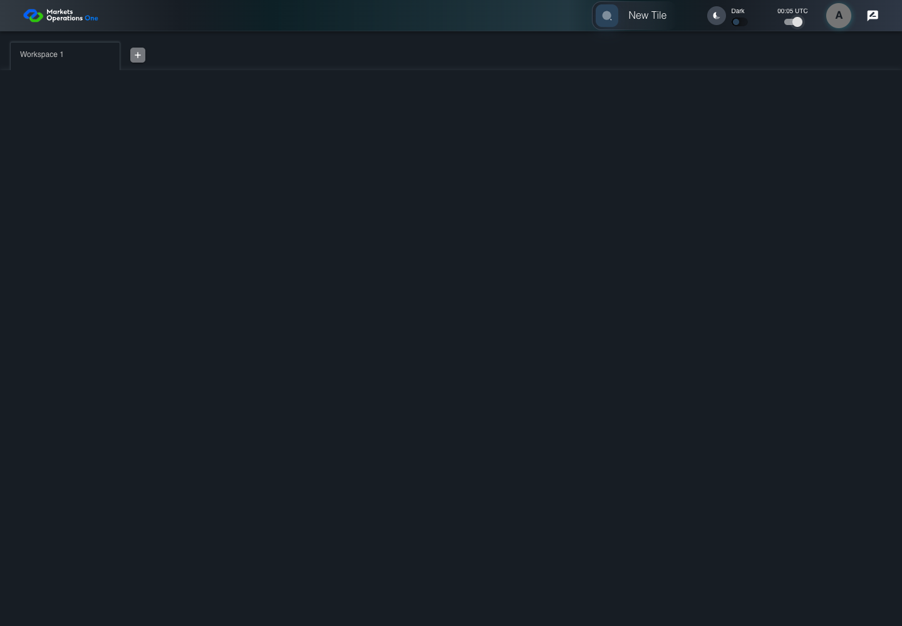

UI-PREF-004 time display uses the selected clock mode
PASS · application/run-004/ui-pref-004-time-display-uses-the-selected-clock-mode-012725b0dfc2-attempt-1 · ACTUAL_APPLICATION_LOCAL_SERVICES
Actual current React with controlled login/validation and seeded empty workspace. Preference storage is real browser storage. Clock cases use Playwright clock.
2026-10-22T04:18:00.166Z to 2026-10-22T04:18:01.165Z
Assertions and result · Artifact manifest · Exact run inputs and source hashes
Result SHA-256:e1da8aa9d48d4886e1ed5b061faeb4349f3de0a7109c583c8832c955661c2b0cMachine observations
- clock-assertions.json
1ff89b19c2b16913cf3894144ab3fdd9f3ec2a713ae56e184ad2b5e5af1db813
Screenshot capture: CAPTURED. Named frames: 3.

The clock shows the canonical initial mode and controlled minute.
2026-10-22T04:18:00.888Z · 1440×1000Step: UI-PREF-004 Given
SHA-256:
39ee156e68b57a856aeddeac2bad31cf86324f626760e4abcbf9c21e85b4f5c2

The clock displays 00:05 UTC.
2026-10-22T04:18:00.970Z · 1440×1000Step: UI-PREF-004 Then
SHA-256:
c5fa2476141409c05014d9c3e85e433819072b2174fee985c15a97b9f5ee1f00
The final visible state after the named test assertions.
2026-10-22T04:18:01.036Z · 1440×1000Step: Test source: /Users/lushevol/code/github/ratan-release-impact/workbench/e2e/audit-specs/preferences.spec.ts:40
SHA-256:
c5fa2476141409c05014d9c3e85e433819072b2174fee985c15a97b9f5ee1f00Screenshots establish visible state only. Assertions and traces support functional claims.